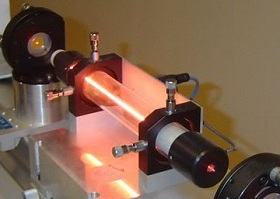

Лазерне маркування
Лазерне маркування – це найпрогресивніший метод нанесення умовних позначень на деталі та вироби. Вона забезпечує високу швидкість процесу, що особливо важливо при масовому виробництві. Також дана технологія дозволяє створювати чіткі позначення, наприклад, штрих-коди та дата-матриці. Більш того, лазерна маркировка являється ідеальним рішенням у випадку роботи з крихким матеріалом, де завжди існує загроза його руйнації. Але завдяки тому, що лазер дозволяє наносити маркування без контакту з поверхнею ймовірність псування виробу мінімізується. Слід зазначити, що в промисловості застосовується три основні типи лазерів: газовий, діодний та волоконний. Останній характеризується економічністю та великим терміном служби його головного компонента. Також він компактний та має повітряне охолодження. Діодний лазер, в свою чергу, відрізняється від усіх інших своєю підвищеною потужністю, яка може досягати 100 Вт. Такі характеристики стали можливі завдяки використанню кристалів Nd:YAG. Доволі часто маркування необхідно наносити не тільки на тверді поверхні, але і на м’які органічні, такі як тканина, шкіра чи дерево. Для цього існують газові лазери. Вони також підходять для роботи з керамікою, склом та пластмасою.
Гелій-неоновий лазер
Гелій-неоновий лазер або HeNe лазер — тип газового лазера, активне середовище якого містить суміш 85% гелію та 15% неону в невеликій капілярній трубці. Зазвичай цей лазер збуджується електричним розрядом прямого струму. Найбільше відомі та найбільше використовуються HeNe лазери, що працюють на довжині хвилі 632,8 нм, у червоній частині видимого спектру.

Червоні гелій-неонові лазери знайшли численні застосування в промисловості та науці. До винаходу дешевих лазерних діодів червоні HeNe лазери широко використовувалися для зчитування штрих кодів у супермаркетах. Лазерні гіроскопи використовували HeNe лазери в кільцевій конфігурації. Іншим колишнім застосуванням були програвачі Laserdisc фірми Pioneer. HeNe лазери продовжують працювати в освітніх та дослідницьких лабораторіях. Перевагами цих лазерів є відносна дешевизна та простота обслуговування порівняно з іншими лазерами видимого діапазону, що мають аналогічні вихідні промені високої просторової когерентності.
Використання волоконного лазера
У сучасних технологічних лазерних комплексах все частіше використовують твердотільні лазери із активним середовищем, що має відносно велику довжину та незначні розміри поперечного перерізу, так звані, волоконні лазери. В якості активного середовища застосовуються наприклад кварцове волокно, леговане рідкоземельними елементами з групи лантаноїдів (неодим N d , ітербій УЬ, ербій Ег, гольмій Н о , тулій Тт, празеодим Рг) або вісмутом ВІ (рис. 1). Передавання енергії збудження у волоконних лазерах відбувається оптичними діодами накачування, які випромінюють некогерентне випромінення. Через оптичний роз’єм енергія накачування направляється в волокно активного середовища, в якому й відбувається генерація лазерного випромінення.

Використання напівпровідникових лазерів
Потужні діодні лазери з високоефективною електричної накачуванням при помірних напругах використовуються в якості засобів підведення енергії високоефективних твердотільних лазерів. Напівпровідникові лазери можуть працювати у великому діапазоні частот, який включає видиму, ближню інфрачервону і середню інфрачервону частину спектру. Створено пристрої, що дозволяють змінювати частоту издучения. Лазерні діоди можуть швидко перемикати і модулювати оптичну потужність, що знаходить застосування в передавачах оптоволоконних ліній зв’язку. Такі характеристики зробили напівпровідникові лазери технологічно найбільш важливим типом квантових генераторів. Вони застосовуються: у датчиках телеметрії, пирометрах, оптичних высотомерах, дальномерах, прицілах, голографії; в оптоволоконних системах оптичної передачі і зберігання даних, системах когерентної зв’язку; у лазерних принтерах, видеопроекторах, покажчиках, сканерах штрих-коду, сканерах зображень, програвачах компакт-дисків (DVD, CD, Blu-Ray); у охоронних системах, квантової криптографії, автоматиці, індикаторах; в оптичній метрології та спектроскопії; у хірургії, стоматології, косметології, терапії; для очищення води, обробки матеріалів, накачування твердотільних лазерів, контролю хімічних реакцій, промислової сортування, промисловому машинобудуванні, системи запалювання